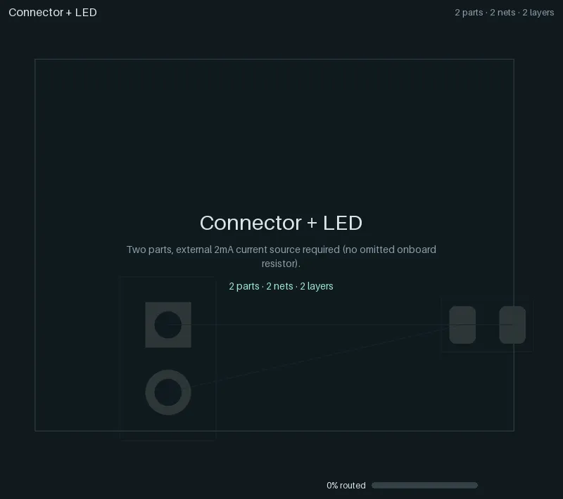
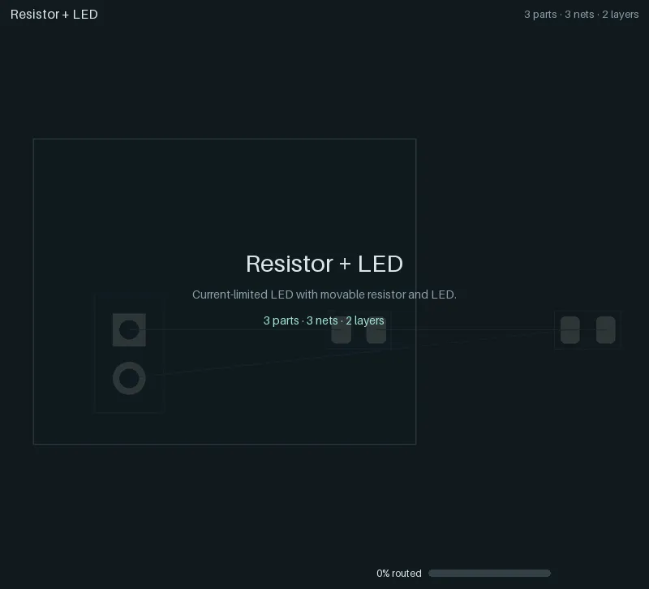
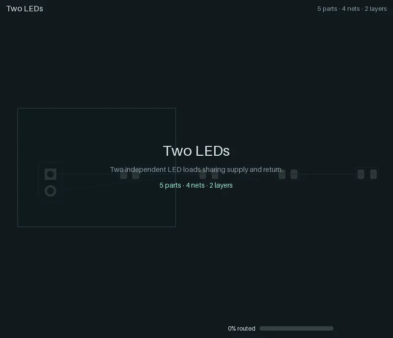
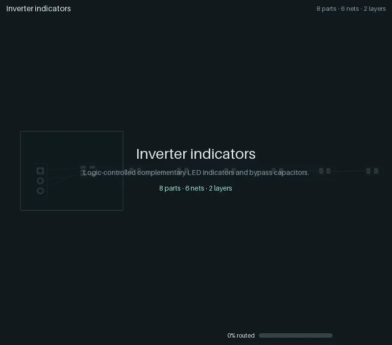
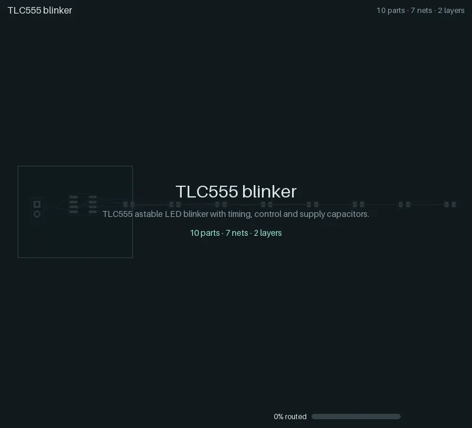
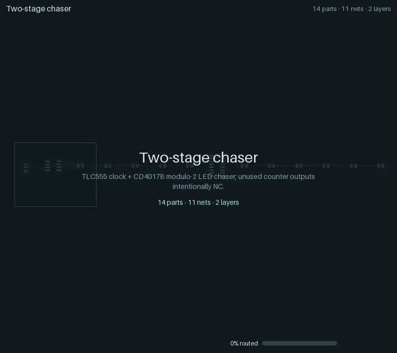
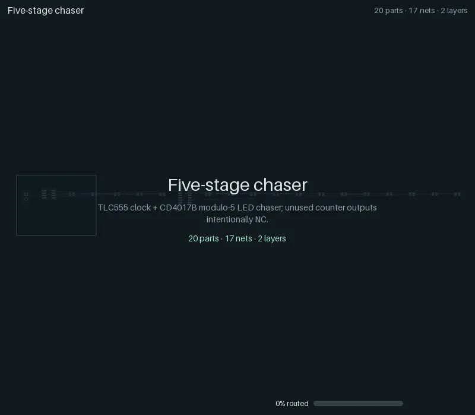
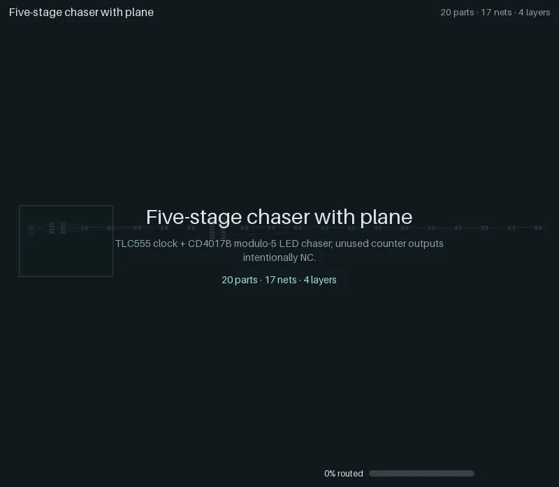

Regression ladder¶
The regression ladder is yapnr’s ramping-complexity test suite: eight small boards, from one LED on
a connector up to a TLC555 + CD4017B LED chaser on four copper layers. Each case starts from its
circuit alone (a netlist of real KiCad library footprints on an empty outline; only the supply
connector is fixed), runs the ordinary place-and-route pipeline, and is judged by KiCad’s own
design-rule check (DRC) on the saved board. The fixtures, the runner and the frozen results of the
engine’s last Splanc round live in hardware/pnr/regression/. Past case 08 the
ladder continues with rungs 09 to 12: a USB microcontroller board, a
hierarchical four-bank board, current-sized power copper, a buck stage on hot-rod lands, a 0.65 mm
BGA escape with split rails and with a coupled pair, and a purpose-built 113-part BGA computer.
Every case below has an animation of its critical path: one straight line from the unplaced board
to the fully routed board and KiCad’s verdict, including the experiments the final board descends
from and, at each selection, the candidates it was chosen from. The animations are recorded with
two opt-in stages, both off by default: compact placement
(PNR_COMPACT=1) and the gloss pass (PNR_GLOSS=1).
Status (2026-10-03): all eight cases pass the gate: 100 % routed, no open connections and no findings in KiCad’s DRC, in the default configuration and with compact placement and gloss (the animations’ configuration). The ladder routes and is judged under its fixtures’ own fabrication rules (
--fab-profile legacy, the runner’s default; see below). Under the engine’s default JLCPCB profile (--fab-profile jlc-pofv), where the router keeps vias 0.127 mm off SMD pads, every case passes too (other boards; for the hard rungs see the gate below).Default-flip gate (2026-10-07, campaigns
20261007-ladder-4f191e,-0abe44and-a98686, decisions.md): the runner’s default stayslegacy, for the owner to decide. All 21 cells20261006-ladder-b0ec34found failing underjlc-pofvnow pass: the last one,11-ufbga201-fanout-6L-SGSGPS-rails, was a plane-partition bug (a plated through-hole pad was modelled as the disc inside it, so VBAT’s In4 fill round J7.1’s 1.7 mm square pad fell into three pieces whenever the allocation gave VBAT a plane; fixed,-railspasses 16 of 16 on seeds 0 to 7 under both profiles). Across the 45 gated cells (90 seed runs)jlc-pofvpasses 90 tolegacy’s 88 (legacyfails09-mcu-usb-31-headerseed 0 and09-mcu-usb-31-mcseed 1 on skew findings), with the same opens and fewer vias (3627 vs 3894) and less copper (29.5 m vs 31.9 m). But the three manual target rungs, which fail under both profiles, leave more open underjlc-pofv:11-shove-channel-lm-143 nets vs 2 (both seeds),12-soc-bga-113(under its declaredjlc-6l-hdi) 51 unrouted nets on seed 1 vs 33 and 35, and seed 0 past its 3600 s place-and-route budget;11-shove-channel-14is equal (2). The gate’s “no rung is worse thanlegacy” therefore does not hold for those rungs, and the flip waits for the owner.
The cases¶
Seed 0, with the initial placement pool (8 starts, 3 routed finalists), compact placement and the
gloss stage (run.py --compact --gloss), the legacy fabrication profile; KiCad 10.0.6, engine
d002bfa (compact placement with the legalizer parts WIRE, TURN and SATELLITES). “Opens” and
“findings” are KiCad’s DRC counts on the saved board; “Placed” is the bounding box of the placed
parts’ bodies (compactness in result.json) on the board’s outline; the time is the case’s wall
time on the development Mac (darwin-arm64), niced, next to other work, gloss stage included (about
20 s of it is a fixed overhead).
Case |
Parts |
Nets |
Layers |
Added difficulty |
Routed |
Opens |
Findings |
Vias |
Copper (mm) |
Placed on board (mm) |
Time (s) |
Gate |
|---|---|---|---|---|---|---|---|---|---|---|---|---|
2 |
2 |
2 |
Basic connection; externally current-limited supply |
100 % |
0 |
0 |
0 |
6.33 |
5.8 × 6.2 on 18 × 14 |
20.0 |
pass |
|
3 |
3 |
2 |
Movable series current limiter |
100 % |
0 |
0 |
0 |
13.09 |
5.7 × 9.0 on 20 × 16 |
19.1 |
pass |
|
5 |
4 |
2 |
Shared, branched supply and return |
100 % |
0 |
0 |
0 |
24.13 |
8.3 × 8.7 on 24 × 18 |
20.3 |
pass |
|
8 |
6 |
2 |
SOT-23-5 pin escapes, an unused pad, 3-pin connector |
100 % |
0 |
0 |
2 |
56.08 |
12.6 × 13.6 on 26 × 20 |
25.1 |
pass |
|
10 |
7 |
2 |
8-pin IC, RC timing and control, bypass and bulk caps |
100 % |
0 |
0 |
4 |
75.14 |
14.1 × 15.0 on 30 × 24 |
24.5 |
pass |
|
14 |
11 |
2 |
TLC555 + CD4017B, cross-IC clock and reset, fanout |
100 % |
0 |
0 |
6 |
165.58 |
20.9 × 19.6 on 36 × 28 |
33.4 |
pass |
|
20 |
17 |
2 |
Five LED/resistor outputs, shared rails, dense routes |
100 % |
0 |
0 |
13 |
220.85 |
21.2 × 23.6 on 42 × 32 |
44.1 |
pass |
|
20 |
17 |
4 |
Four copper layers, ground plane attachment and refill |
100 % |
0 |
0 |
27 |
172.61 |
23.1 × 20.6 on 42 × 32 |
42.8 |
pass |
Against the animations they replace (2026-10-03: the same configuration without the legalizer parts,
engine cfb7cb3, on the same Mac), the legalizer now picks each part’s slot and turn with its
wirelength and turns parts in place where that shortens their wires: the copper is shorter on seven
of the eight cases (05: 113.37 to 75.14 mm, 06: 208.79 to 165.58 mm, 07: 272.90 to 220.85 mm, 08:
215.62 to 172.61 mm; 01 is unchanged) and the vias fewer (04: 4 to 2, 05: 6 to 4, 06: 11 to 6, 07:
23 to 13, 08: 29 to 27). These are single seeds; the compact placement
design (section 11) measures the parts on two seeds and the hard
rungs.
The baseline configuration (no pool, neither opt-in stage), seeds 0 and 1, as the nightly CI
lane runs it, passes all sixteen runs as well. The machine-readable results are in
animations/ladder-results.json, and
the provenance of the animations (the ladder run’s engine commit, sources_sha256 over its frozen
sources, fabrication profile, platform and KiCad; the render’s Pillow version; each file’s trace
and content hash) is in animations/manifest.json.
The gate (see the ladder README) requires a legal placement, complete routing with
no deferred nets, the original pin and net assignments, tracks at their source widths, qualified SMD
pad entries, and zero KiCad unconnected items and findings, warnings included. Signal tracks are
0.25 mm, supply and return at least 0.4 mm, clearance 0.2 mm, vias 0.6/0.3 mm: the fixtures’ own
fabrication block, which the runner routes and judges under (PNR_FAB_PROFILE=legacy for every
stage). --fab-profile jlc-pofv routes and judges under the engine’s default JLCPCB profile
instead (0.127 mm clearance, 0.45/0.30 mm vias, vias 0.127 mm off SMD pads).
Rungs 09 to 12¶
Past the eight small cases the ladder continues with six of the hard rungs
(hard_rungs.py, CI lane ladder): one per family, each judged by the same gate plus
the rung’s own constraint checks (check_constraints.py on the saved board) and custom KiCad rules
(plane layers carry no tracks, via policy, differential-pair skew, length-match groups), and the
purpose-built top rung. Seeds 0 and 1 with the initial placement pool (8 starts, 3 routed finalists),
the runner’s other defaults (no compact placement or gloss) and the legacy fabrication profile,
as the nightly CI hard-rung step runs them; engine 1f4c3d8, GCP C4 (x86-64), KiCad 10.0.6. Values
are seed 0 / seed 1; the time is the case’s wall time (one vCPU per case; two for the top rung).
Rung |
Parts |
Nets |
Layers |
Added difficulty |
Seeds 0, 1 |
Opens |
Findings |
Vias |
Copper (mm) |
Time (s) |
|---|---|---|---|---|---|---|---|---|---|---|
|
31 |
27 |
2 |
ATmega32U4 TQFP-44, crystal, USB Micro-B with two differential pairs, LDO, LEDs |
pass, pass |
0 / 0 |
0 / 0 |
39 / 49 |
792.9 / 971.5 |
357 / 371 |
|
56 |
50 |
2 |
Hierarchy: a clock block and one CD4017B bank template placed and routed four times |
pass, pass |
0 / 0 |
0 / 0 |
62 / 62 |
1076.6 / 1076.6 |
102 / 102 |
|
31 |
17 |
2 |
Four-channel 12 V MOSFET switch: 3 A trunk, 1.5 A outputs, current-sized copper |
pass, pass |
0 / 0 |
0 / 0 |
22 / 20 |
748.0 / 726.7 |
69 / 49 |
|
10 |
6 |
4 |
Buck stage on VQFN-HR hot-rod lands no track can enter, joined by outer pours |
pass, pass |
0 / 0 |
0 / 0 |
17 / 17 |
45.7 / 49.5 |
14 / 16 |
|
19 |
55 |
6 |
0.65 mm UFBGA-201 escape; two of three supply rails share one plane (the trickle rail traced on a signal layer), IR drop judged per rail |
pass, pass |
0 / 0 |
0 / 0 |
133 / 137 |
791.2 / 827.9 |
102 / 102 |
|
18 |
55 |
6 |
0.65 mm UFBGA-201 escape; an LVDS pair coupled on F.Cu from the fanout (skew 0.1 mm) |
pass, pass |
0 / 0 |
0 / 0 |
135 / 135 |
815.1 / 884.9 |
94 / 95 |
|
113 |
112 |
6 |
STM32F746 UFBGA176+25: SDRAM with a length-matched lane, QSPI, RMII PHY, USB, microSD; four supply domains |
fail, fail |
37 / 40 |
18 / 20 |
355 / 375 |
2522.5 / 2606.9 |
1294 / 1083 |
The top rung, 12-soc-bga-113 (soc_rung.py, manual lane), is a purpose-built
single-board computer: an STM32F746 in a 0.65 mm UFBGA176+25 with a 16-bit SDRAM whose high data
byte lane is a length-match group (1.0 mm), a quad-SPI flash, an RMII Ethernet PHY with series and
MDI terminations, USB full speed, microSD, SWD and I/O connectors, and four supply domains (USB
5 V, a buck to 3.3 V that owns the supply plane, two LDOs whose analog rails are routed on signal
layers) on six layers. Its pin map is KiCad’s STM32F746IGKx symbol; hard proximity groups keep
each part’s support parts beside it; the ladder README describes it. It is the
ladder’s target, not yet a pass (engine bc82338, the same configuration): the router leaves 34 of
its 112 nets open on both seeds, and KiCad’s findings name what is still missing besides capacity:
the SDRAM lane out of skew (9 / 8 skew_out_of_range), tracks through the keep-outs the microSD and
QFN footprints carry (5 / 10 items_not_allowed: the router does not read footprint rule areas), a
via 0.19 mm from the USB receptacle’s shell hole (2 / 2 hole_to_hole, minimum 0.25 mm) and 2 / 0
clearance. Its proximity, edge and fixed checks pass; the fanout-escape check does not (balls
left unrouted). It carries a ci.target (dense-board routing) in the manual lane.
Push-and-shove rungs¶
11-shove-channel-14 and 11-shove-channel-lm-14 (shove_rungs.py, manual lane)
are small two-layer boards made for a push-and-shove router: a copper wall with one 4.25 mm channel,
a 10-net bus through it and four late nets that cross the bus and share the channel. Nine tracks fit
per layer (eight on a 0.25 mm routing grid) and fourteen nets need the channel; the -lm variant
turns the bus north after the channel and matches it to 0.5 mm, so its meanders need the room the
late nets cross. They are routable by construction, and the current router (negotiated rip-up and
reroute) leaves nets open on them: they are marked as targets for the queued push-and-shove router
(ci.target), not gated.
Seeds 0 and 1, the same configuration and engine as the rungs above:
Rung |
Parts |
Nets |
Layers |
Seeds 0, 1 |
Nets left open (engine) |
KiCad opens |
KiCad findings |
Time (s) |
|---|---|---|---|---|---|---|---|---|
|
4 |
14 |
2 |
fail, fail |
B5, X0 / B5, X0 |
2 / 2 |
0 / 0 |
148 / 152 |
|
4 |
14 |
2 |
fail, fail |
X2, X3 / X2, X3 |
2 / 2 |
9 / 9 ( |
161 / 163 |
CI test rungs¶
The other hard rungs vary one dimension of a base (stackup, via policy, sides, placement
constraints, search, parts) and stay CI test rungs: the nightly lane runs every night
(informational), the manual lane on request. The same campaign’s results:
Rung |
Lane |
Dimension |
Parts |
Cu |
Seed 0 |
Seed 1 |
Vias |
Time (s) |
|---|---|---|---|---|---|---|---|---|
|
manual |
stackup 4L-SGPS |
31 |
4 |
pass |
pass |
73 / 82 |
110 / 129 |
|
manual |
stackup 4L-SSGS |
31 |
4 |
pass |
pass |
69 / 77 |
233 / 182 |
|
manual |
stackup 6L-SGSGPS |
31 |
6 |
pass |
pass |
76 / 84 |
120 / 162 |
|
manual |
constraints absolute |
33 |
2 |
pass |
pass |
56 / 53 |
307 / 265 |
|
manual |
constraints relative |
31 |
2 |
pass |
pass |
50 / 50 |
326 / 341 |
|
manual |
sides assigned |
31 |
2 |
pass |
pass |
43 / 51 |
313 / 329 |
|
manual |
search mc |
31 |
2 |
pass |
pass |
41 / 40 |
277 / 265 |
|
manual |
parts tht-header |
31 |
2 |
fail ( |
fail ( |
- |
25 / 26 |
|
nightly |
stackup 4L-SGPS |
20 |
4 |
pass |
pass |
28 / 32 |
27 / 51 |
|
nightly |
stackup 4L-SGGS |
20 |
4 |
pass |
pass |
25 / 29 |
31 / 40 |
|
nightly |
stackup 4L-SSGS |
20 |
4 |
pass |
pass |
29 / 30 |
32 / 32 |
|
nightly |
stackup 6L-SGSSPS |
20 |
6 |
pass |
pass |
26 / 34 |
32 / 33 |
|
nightly |
stackup 6L-SGSGPS |
20 |
6 |
pass |
pass |
30 / 32 |
30 / 30 |
|
nightly |
stackup 8L-SGSGPSGS |
20 |
8 |
pass |
pass |
30 / 30 |
31 / 49 |
|
nightly |
stackup 6L-SGSGPS, via policy blind-buried |
20 |
6 |
pass |
pass |
31 / 34 |
78 / 91 |
|
nightly |
stackup 6L-SGSGPS, via policy hdi |
20 |
6 |
pass |
pass |
32 / 38 |
96 / 88 |
|
nightly |
sides double |
20 |
2 |
pass |
pass |
14 / 15 |
45 / 46 |
|
nightly |
stackup 4L-SGPS, sides double |
20 |
4 |
pass |
pass |
24 / 24 |
36 / 36 |
|
nightly |
constraints absolute |
22 |
2 |
pass |
pass |
22 / 22 |
36 / 38 |
|
nightly |
constraints relative |
20 |
2 |
pass |
pass |
21 / 21 |
37 / 31 |
|
nightly |
sides assigned |
20 |
2 |
pass |
pass |
15 / 18 |
75 / 82 |
|
nightly |
stackup 4L-SGPS, parts arcblock |
22 |
4 |
pass |
pass |
38 / 43 |
32 / 30 |
|
manual |
stackup 6L-SGSGPS |
17 |
6 |
pass |
pass |
133 / 135 |
89 / 89 |
|
manual |
stackup 6L-SGSGPS, parts block |
18 |
6 |
pass |
pass |
142 / 141 |
103 / 92 |
|
manual |
stackup 6L-SGSGPS, constraints classes |
18 |
6 |
pass |
pass |
133 / 133 |
94 / 96 |
|
manual |
stackup 6L-SGSGPS, constraints partial |
17 |
6 |
pass |
pass |
131 / 133 |
91 / 89 |
|
manual |
stackup 4L-SGPS |
10 |
4 |
pass |
pass |
12 / 12 |
14 / 14 |
09-mcu-usb-31-header fails in this configuration because the initial pool cannot place its
pin-1-origin header; it passes with compact placement (see
Compact placement).
Showcases¶
Four more cases show what the engine does with placement constraints and with hierarchy: the five-stage chaser with its LEDs held in a line group, a small board with its connector, button and LED held on the south edge (each beside a twin without the constraint), and a twin-bank chaser placed and routed as blocks. They run through the same runner and gate, but they are not ladder cases: they are outside the gate and the pull-request lane (the nightly lane runs them for information). Their animations and results are on Constraints and hierarchy.
Reading an animation¶
Header: the case, and its parts, connected nets and copper layers.
Footer: the phase and the experiment it belongs to (
start-05is the sixth start of the initial placement pool), the share of connections routed, and the step within the phase. The number and the mint bar count committed copper (or, after writeback, KiCad’s own count); while the router still negotiates (provisional routes, overlaps allowed), a lighter violet bar fills behind it.Board: front copper orange, back copper blue, inner layers violet and yellow (planes as a light fill), vias as rings, unrouted connections as thin grey ratsnest lines. New copper flashes green; ripped-up copper flashes red. A red ring marks each KiCad DRC finding, if any. Part outlines are the courtyards the placer keeps apart (with compact placement, offset to where the footprint actually lies about its origin).
Gloss (before and after): with the gloss stage, the board before it shows the copper the stage replaces in dashed red (“Gloss: before” and the copper length), then cross-fades to the board after it with the new copper in green (“Gloss: after”, the length and its change). Only copper whose geometry changed is marked: the pass also merges collinear pieces of a track, which leaves the copper as it was. A case whose copper the stage did not change shows “Gloss · no copper changed” instead.
Montages: where the engine chose between experiments, the candidates appear side by side with their score; the chosen one is framed, and the view zooms back into it. A montage comes right after the winner’s own replay has reached the state its tiles show, so the timeline never runs ahead of itself: the pool’s shortlist (legal starts ranked by a capacity proxy) follows the chosen start’s legalization, and the routed finalists follow its route.
The straight line: title card, the unplaced board (footprints in the generator’s row), the chosen start’s global placement and legalization, the shortlist, detailed routing (negotiation, then commits), the finalists, KiCad’s writeback and planes, the gloss stage’s before and after, the zone refill, then the verdict. With feedback rounds, each round on the path follows with its congestion map.
End card: KiCad’s DRC on the saved board (mint when the gate passes, red with the rules it breaks when it fails), vias, copper length, seed and the number of rivals set aside.
Animations¶
01 Connector + LED¶

Two parts, externally current limited (no onboard resistor). 2 nets, 0 vias, 6.3 mm of copper; the LED sits beside the connector’s pins (5.8 × 6.2 mm placed); the gloss stage changes no copper. KiCad: 0 unconnected, 0 findings. Passes.
02 Resistor + LED¶

A movable series current limiter. 3 nets, 0 vias, 13.1 mm of copper (5.7 × 9.0 mm placed); the gloss stage changes no copper. KiCad: 0 unconnected, 0 findings. Passes.
03 Two LEDs¶

Two independent LED loads sharing supply and return. 4 nets, 0 vias, 24.1 mm of copper (8.3 × 8.7 mm placed); the gloss stage straightens one short track (0.01 mm less). KiCad: 0 unconnected, 0 findings. Passes.
04 Inverter indicators¶

Complementary LED indicators driven by an SN74LVC1G04, with bypass capacitors and one unused pad. 6 nets, 2 vias, 56.1 mm of copper (12.6 × 13.6 mm placed); gloss: 56.4 to 56.1 mm of copper. KiCad: 0 unconnected, 0 findings. Passes.
05 TLC555 blinker¶

The 555 flasher: a TLC555 astable with timing, control and supply capacitors, and the README’s
animation (also as a GIF,
05-timer-led-10.gif). 7 nets, 4 vias,
75.1 mm of copper (14.1 × 15.0 mm placed); gloss: 76.5 to 75.1 mm of copper, 10 to 5 signal
bends. KiCad: 0 unconnected, 0 findings. Passes.

06 Two-stage chaser¶

A TLC555 clocking a CD4017B Johnson counter, modulo 2, with cross-IC clock and reset. 11 nets, 6 vias, 165.6 mm of copper (20.9 × 19.6 mm placed); gloss: 167.1 to 165.6 mm of copper, 26 to 12 signal bends. KiCad: 0 unconnected, 0 findings. Passes.
07 Five-stage chaser¶

The same timer and counter driving five LED and resistor outputs on two layers: the densest two-layer board. 17 nets, 13 vias, 220.8 mm of copper (21.2 × 23.6 mm placed); gloss: 225.5 to 220.8 mm of copper, 58 to 23 signal bends. KiCad: 0 unconnected, 0 findings. Passes.
08 Five-stage chaser with plane¶

Case 07 on four copper layers, with the return on an inner ground plane (attachment and zone refill). 17 nets, 27 vias, 172.6 mm of copper (23.1 × 20.6 mm placed); gloss: 176.5 to 172.6 mm of copper, 56 to 30 signal bends. KiCad: 0 unconnected, 0 findings. Passes.
Regenerating¶
The ladder needs a numerical Python (torch, NumPy, PyYAML) and KiCad 10 with its Python module and footprint library. On macOS, use the headless KiCad copy (see DEVELOPERS.md), never the application bundle; run niced on a shared machine. The committed animations were made in two steps, a traced ladder run and a render:
# 1. The traced ladder (about 7 minutes on the development Mac); the output must not exist.
# The fabrication profile defaults to legacy (--fab-profile); --compact and --gloss are the
# animations' opt-in stages (recorded in each animation's config).
"$NUMERIC_PYTHON" hardware/pnr/regression/run.py --repo . --out .yapnr/ladder/RUN --seed 0 \
--trace --initial-pool --initial-starts 8 --initial-finalists 3 --compact --gloss \
--python "$NUMERIC_PYTHON" --kicad-python "$PNR_KICAD_PYTHON" \
--kicad-cli "$PNR_KICAD_CLI" --library "$PNR_KICAD_FOOTPRINTS"
# 2. Render every case into docs/animations/ (WebP, the README GIF, manifest.json and
# ladder-results.json); no KiCad needed. --allow-failed also renders failed cases (their end
# card names the broken rules in red).
bazel run //hardware/pnr:ladder_animations -- --render-only "$PWD/.yapnr/ladder/RUN"
bazel run //hardware/pnr:ladder_animations without --render-only does both (pass --python,
--kicad-python, --kicad-cli and --library, and --runner-arg=--compact --runner-arg=--gloss
for the committed configuration); it reruns a case that fails in pool mode in the baseline
configuration (with --fallback-runner-arg=--gloss, without compact placement). One case, or
another trace, renders with bazel run //hardware/pnr:animate -- SOURCE --out FILE.webp
(python -m pnr.animate; .gif and, with ffmpeg, .mp4 work too). .yapnr/ is
git-ignored: only the rendered animations and the two JSON files are committed.
pnr.animate also takes the output directory of a successive-halving search (pnr.mc.halving).
Such a run records no trace, so its animation is reconstructed from what it saved (the overlay
does not claim more): the winner’s placement moving in from the source board, a montage per
promotion (the candidates’ placements with their rung objective), the winning rung’s native
phases (phases/NN-name/diagnostic.kicad_pcb with each phase’s KiCad DRC) and a montage of that
rung’s final boards, then the verdict. Blocks assembled from a synthesis library appear in place;
a library itself has no board to draw, and --storyboard FILE writes its critical path (the
chosen layout per template and its rivals) instead. The animator only reads its sources.
Rendering is deterministic: the same trace gives the same bytes. Renderer 3 (the manifest’s
renderer) adds the gloss stage’s before and after; a trace without the stage renders as
before. Budgets: the ladder’s WebPs at most 2.5 MB (800 px), its README GIF at most 5 MB
(640 px), the folder at most 30 MB with the showcases, whose own widths and budgets are on
Constraints and hierarchy
(tests/unit/repo/test_animations.py checks them all). Refresh the committed animations
deliberately, after a notable engine change, not on every pull request: each refresh adds about
12 MB to the history.
Gloss (opt-in)¶
run.py --gloss adds one stage after the refill: the gloss, dekink and corridor-coalescing pass
(PNR_GLOSS, off by default; design), with the semantics of the native loop’s
07g-gloss pass, gated inside the pass by native checks and a cold KiCad DRC, and again by the
runner’s own DRC (a worse DRC restores routed.pre-gloss.kicad_pcb). --gloss-flag PNR_GLOSS_NAME=VALUE passes sub-flags, and --gloss-measure measures every final board, for both
arms of an A/B.
A/B of 2026-10-03: the eight cases and the four showcases, seeds 0 and 1, one engine (2fc4cc9)
for both arms, legacy profile, on the development Mac (niced, beside other work):
run.py ... --seed 0 --seed 1 --showcases --gloss-measure # off
run.py ... --seed 0 --seed 1 --showcases --gloss --gloss-measure # on
Every on-arm case pairs with its off-arm twin (the same placement, routes and pre-gloss copper,
copper_sha256). “Length” and “Bends” are the eligible signal copper (Default netclass, signal
width) and every degree-2 vertex on it; X is the summed excess gap to same-class neighbours within
2 mm (smaller is tighter) and DS the free area no signal track can use. Transactions are accepted
of proposed. “Gloss” is the stage’s wall and CPU time with its two cold DRCs; “Case CPU” is the
whole case’s CPU time without --gloss-measure, which both arms run.
Case |
Seed |
Gate off / on |
Opens, findings |
Length (mm) |
Bends |
X (mm²) |
DS (mm²) |
Transactions |
Gloss wall / CPU (s) |
Case CPU off / on (s) |
|---|---|---|---|---|---|---|---|---|---|---|
01-connector-led-2 |
0 |
pass / pass |
0, 0 → 0, 0 |
4.6 |
3 |
0.0 |
0.03 |
1 of 1 |
12 / 29 |
9 / 38 |
01-connector-led-2 |
1 |
pass / pass |
0, 0 → 0, 0 |
4.6 |
3 |
0.0 |
0.03 |
1 of 1 |
12 / 29 |
9 / 38 |
02-resistor-led-3 |
0 |
pass / pass |
0, 0 → 0, 0 |
3.7 |
5 |
0.0 |
0.21 |
1 of 1 |
12 / 29 |
9 / 38 |
02-resistor-led-3 |
1 |
pass / pass |
0, 0 → 0, 0 |
6.7 → 5.9 |
9 → 5 |
0.0 |
0.32 → 0.09 |
3 of 3 |
18 / 40 |
9 / 50 |
03-branched-leds-5 |
0 |
pass / pass |
0, 0 → 0, 0 |
10.2 → 10.1 |
12 → 9 |
0.0 |
0.17 |
2 of 2 |
15 / 34 |
9 / 44 |
03-branched-leds-5 |
1 |
pass / pass |
0, 0 → 0, 0 |
8.2 |
10 |
0.0 |
0.10 |
1 of 1 |
11 / 29 |
10 / 39 |
04-inverter-leds-8 |
0 |
pass / pass |
0, 0 → 0, 0 |
35.6 → 35.0 |
33 → 26 |
4.0 → 6.3 |
0.52 → 0.46 |
3 of 3 |
16 / 41 |
12 / 53 |
04-inverter-leds-8 |
1 |
pass / pass |
0, 0 → 0, 0 |
38.3 → 37.3 |
40 → 27 |
0.0 |
0.66 → 0.57 |
5 of 5 |
20 / 52 |
13 / 65 |
05-timer-led-10 |
0 |
pass / pass |
0, 0 → 0, 0 |
47.4 → 45.7 |
59 → 41 |
0.8 → 0.6 |
2.01 → 1.90 |
4 of 5 |
21 / 48 |
15 / 63 |
05-timer-led-10 |
1 |
pass / pass |
0, 0 → 0, 0 |
69.6 → 65.8 |
67 → 44 |
6.8 → 4.4 |
2.12 → 1.20 |
8 of 8 |
30 / 71 |
49 / 122 |
06-chaser-14 |
0 |
pass / pass |
0, 0 → 0, 0 |
150.7 → 144.7 |
113 → 85 |
34.6 → 21.2 |
2.29 → 2.62 |
7 of 7 |
31 / 71 |
31 / 102 |
06-chaser-14 |
1 |
pass / pass |
0, 0 → 0, 0 |
113.5 → 111.6 |
91 → 65 |
13.3 → 14.3 |
2.98 → 2.49 |
6 of 6 |
24 / 60 |
37 / 96 |
07-chaser-20 |
0 |
pass / pass |
0, 0 → 0, 0 |
231.8 → 220.0 |
191 → 130 |
20.8 → 9.7 |
3.93 → 3.88 |
10 of 10 |
41 / 92 |
49 / 142 |
07-chaser-20 |
1 |
pass / pass |
0, 0 → 0, 0 |
217.8 → 206.6 |
180 → 120 |
52.1 → 38.7 |
4.59 → 2.98 |
13 of 14 |
55 / 114 |
115 / 231 |
08-chaser-20-plane |
0 |
pass / pass |
0, 0 → 0, 0 |
231.7 → 226.9 |
171 → 127 |
37.4 → 25.1 |
4.74 → 3.82 |
13 of 13 |
46 / 107 |
82 / 188 |
08-chaser-20-plane |
1 |
pass / pass |
0, 0 → 0, 0 |
248.3 → 237.0 |
192 → 110 |
45.6 → 22.1 |
4.98 → 2.78 |
15 of 15 |
53 / 121 |
198 / 315 |
edge-io-12 |
0 |
pass / pass |
0, 0 → 0, 0 |
93.0 → 89.6 |
90 → 53 |
9.5 → 3.8 |
1.51 → 1.25 |
6 of 6 |
25 / 61 |
21 / 81 |
edge-io-12 |
1 |
pass / pass |
0, 0 → 0, 0 |
94.7 → 91.0 |
94 → 61 |
19.0 → 14.1 |
1.55 → 1.31 |
10 of 10 |
38 / 85 |
38 / 122 |
edge-io-12-free |
0 |
pass / pass |
0, 0 → 0, 0 |
100.1 → 95.6 |
82 → 52 |
18.7 → 21.5 |
1.77 → 1.67 |
8 of 8 |
29 / 72 |
32 / 105 |
edge-io-12-free |
1 |
pass / pass |
0, 0 → 0, 0 |
94.4 → 90.9 |
82 → 43 |
13.8 → 11.8 |
1.58 |
9 of 9 |
30 / 76 |
22 / 98 |
hier-twin-bank-32 |
0 |
pass / pass |
0, 0 → 0, 0 |
323.9 → 307.8 |
279 → 210 |
66.1 → 54.5 |
8.56 → 5.21 |
7 of 7 |
45 / 84 |
213 / 296 |
hier-twin-bank-32 |
1 |
pass / pass |
0, 0 → 0, 0 |
307.4 → 294.3 |
271 → 202 |
63.2 → 58.4 |
8.71 → 6.14 |
7 of 7 |
42 / 83 |
224 / 305 |
line-chaser-20 |
0 |
pass / pass |
0, 0 → 0, 0 |
235.8 → 227.4 |
188 → 125 |
34.2 → 32.6 |
3.57 → 3.26 |
10 of 10 |
39 / 90 |
58 / 147 |
line-chaser-20 |
1 |
pass / pass |
0, 0 → 0, 0 |
184.3 → 177.6 |
162 → 96 |
20.8 → 10.4 |
3.22 → 3.17 |
6 of 6 |
30 / 67 |
35 / 102 |
No regression: all 24 runs pass the gate in both arms; KiCad’s opens and findings (0 and 0 everywhere), the objective vector and the audit are unchanged. The runner’s outer gate never fired, no pass reverted at its end gate and none stopped on a budget.
Bends -32 % in total (2427 to 1652; 0 to -48 % per run), length -4.0 % (2856.3 to 2741.9 mm; never up), X -24 % in total and DS -22 %. X rose on three runs and DS on one: the router’s cost ranks first, and a shortcut that saves at least 0.2 mm is kept even when it moves a track off its neighbour.
The legalizer at work: 156 of 158 transactions accepted; the trial worker dropped the other two edits on the applied board (a new same-net contact,
L2, and a corridor member whose segments an earlier transaction had replaced). Edits: normalize 281, dekink 162, gloss 185, corridor 18.Cost: the stage takes 11 to 55 s of wall time and 29 to 121 s of CPU per case, a roughly fixed overhead (KiCad worker start-up and the cold DRCs dominate on these small boards). In all, the on arm used 2880 s of CPU against 1301 s (2.2 times) and 1918 s of wall time against 1226 s (+56 %). Per case the CPU factor falls with the case’s size: 2.5 to 5.4 on cases 01 to 05, 3.2 to 4.4 on the edge-io showcases, 1.6 to 3.3 on the chaser cases and 1.4 on hier-twin-bank-32.
Against the first A/B (engine
879f22c, before the ray metric stopped depending on the drawing direction): the off arm’s copper is the same on all 24 runs; 21 of the 24 on-arm runs keep the same copper, and three take a different equal-cost edit (length within 0.1 mm, the same bends). X counts a few more samples now (a ray through a neighbour’s vertex counts the neighbour), so its values are not comparable with the first A/B’s.Functional groups (first A/B): 07-chaser-20 with the example groups file (
docs/examples/gloss-groups-chaser.json) and the groups derived from the rules gives the same copper as without groups (longest cross-group run at minimum pitch 0 and 1.5 mm, under the 10 mm cap).Determinism: the off arm repeats the first A/B’s copper on all 24 runs, and a rerun of 04-inverter-leds-8 and 07-chaser-20 (seed 0) with the gloss stage gave the same copper; only the direction in which a few merged segments are drawn differed (1 and 4 segments), which
copper_sha256and the metrics ignore.
The ladder runs the pass after a complete route, so it cannot show whether the pass helps or hurts completion; turning it on by default waits for a paired A/B of the native loop.
Compact placement (opt-in)¶
run.py --compact places with PNR_COMPACT=1 (off by default; design):
spread 1.0 and starts clustered around the fixed parts, the courtyard gap instead of the routing
clearance in the legalizer (with a copper margin only where a part’s box hugs its pads), offset
courtyards (a pin-1-origin header occupies its real extent), a compactness tie-break after
every completion key and the vias, and the plane drops of a plane_layer net without a declared
stack planned before routing, and the legalizer parts of the design’s section 11: the
wirelength term with the turn chosen with the slot, in-place turns, and line satellites.
--compact-off PART drops one part (GP, RANK, LEGALIZE, COURTYARD, DROPS, WIRE,
TURN, SATELLITES, PAIRS, RELAX) for an ablation. PAIRS lets the matched-length pass turn
a pair’s series parts to face their legs; RELAX runs every round after one that does not route
(a net open or a pair out of skew) without compact, the first of them as the run without compact
does (design, section 12). --shrink (PNR_SHRINK=1) also
searches a smaller outline inside the design’s and writes the board at the smallest that routes;
hard rungs are exempt. Both are recorded in provenance.json (pnr_environment).
The legalizer and global-placement switches of the design’s section 11
are runner options too, off by default and usable with or without --compact: --gp-polish,
--gp-channels L, --pool-source-clamp, --legalize-hpwl W, --legalize-reorient [wire],
--legalize-channel-clearance fab and --line-satellites (PNR_GP_POLISH, PNR_GP_CHANNELS,
PNR_POOL_SOURCE_CLAMP, PNR_LEGALIZE_HPWL, PNR_LEGALIZE_REORIENT,
PNR_LEGALIZE_CHANNEL_CLEARANCE, PNR_LINE_SATELLITES, recorded in provenance.json like the
others).
Every case’s result.json gains compactness, measured alike in every arm on the parts’ body
boxes in placed.json: the bounding box (bbox_mm2, bbox_mm), the summed body area,
utilization (area over bbox), occupancy (area over the outline) and the outline area.
run.py ... --seed 0 --seed 1 --showcases --gloss-measure # off
run.py ... --seed 0 --seed 1 --showcases --gloss-measure --compact # compact
run.py ... --seed 0 --seed 1 --showcases --gloss-measure --compact --shrink # and shrink
The animation scripts pass such options with --runner-arg (for example
animate_ladder.py ... --runner-arg=--compact --runner-arg=--gloss) and record them in each
animation’s config; --fallback-runner-arg gives animate_ladder.py’s baseline fallback its
own (--fallback-runner-arg=--gloss reruns a failed compact case without --compact).
The committed animations use --compact --gloss (see The cases); compact
placement is not the default, so they show an opt-in configuration.
Results (2026-10-03, GCP C4D x86-64, seeds 0 and 1): with --compact the eight cases and four
showcases all pass (with and without gloss), as do 09-mcu-usb-31-header (whose pool fails
without it), 08-chaser-20-plane on seeds 0 to 9 (7 of 10 without it) and the 14 nightly hard
rungs; the summed placed bounding box of the 24 ladder cells drops from 13068 to 8122 mm² and
their copper from 4777 to 4022 mm, for 28 more vias. It stays off by default because 5 of the 16
manual 09-mcu-usb-31 rung cells, which pass without it, end with a USB pair out of skew or a
leg unrouted (3 with COURTYARD alone): see the design.
Route-then-compact (opt-in)¶
run.py --route-compact [PARTS] (PNR_ROUTE_COMPACT, off by default;
design)
squeezes a routed placement by the copper each gutter actually holds, x then y, and routes it
again; a worse route backs off and the routed result stands. PARTS is 1 (all) or a comma
list: TOP (the hierarchical top level, after the knit), BLOCK (inside each block template,
whose outline then shrinks) and FLAT (flat boards, after the place-route loop). With
--macro-hull (PNR_MACRO_HULL) hierarchical blocks enter as their routed outlines (per-side
hulls) and slide into each other’s notches; --hull-dovetail W (PNR_HULL_DOVETAIL) adds a
packing term to global placement over the hull bodies. pnr-report.json records the pass as
route_compact (gutters, steps, bounding box and the outline shrink it frees, seconds).
The hierarchical runner’s default bundle includes hull nesting. Legalized hull macros
search nearby legal poses; incomplete knits retain the un-nested and rectangle fallbacks.
Use --hull-nest 0 to disable nesting while keeping the rest of the default bundle, or
hull_nest = false in a ladder campaign. The direct engine equivalent is
PNR_HULL_NEST=0; nesting is otherwise enabled whenever hull macros are enabled.
See the nesting validation and limitations.
Results (2026-10-07, GCP C4D, flags off against each arm, KiCad’s DRC judging every board):
Rungs (cells) |
Arm |
Pass |
Bounding box |
Copper |
Vias |
Place-route time |
|---|---|---|---|---|---|---|
ladder 01-08, pool 8/3 (16) |
off |
16/16 |
3151 mm² |
1136 mm |
70 |
115 s |
|
16/16 |
-21.5 % |
-11.3 % |
-3 % |
+32 % |
|
hier-twin-bank, 10-quad-bank, 13-dovetail, seeds 0-3 (12) |
off |
12/12 |
5336 mm² |
2181 mm |
144 |
245 s |
|
12/12 |
-6.7 % |
-4.4 % |
+4 % |
+84 % |
|
|
12/12 |
-6.2 % |
-0.8 % |
+3 % |
+35 % |
|
|
12/12 |
-19.2 % |
-5.3 % |
+4 % |
+64 % |
|
35 other hard rungs, seeds 0-1 (70) |
off |
60/70 |
39029 mm² |
19266 mm |
2225 |
1939 s |
|
61/70 |
-6.8 % |
-3.3 % |
-0.4 % |
+101 % |
Bounding box, copper and vias are sums of the per-rung means over the cells that placed in both arms; time is the place-route stage. No rung passes less often or ends with more than 1 % more copper. The time goes to the reroutes (measuring and checking take under a second per board): a few seconds a step on the small boards, one to two minutes on the MCU and BGA rungs. The BGA rungs keep their bounding box (the parts at its extremes are fixed).
In CI¶
.github/workflows/ladder.yaml runs the ladder inside the published arm64 image: cases 01 to 06
with seed 0 on pull requests that change engine inputs, and nightly all eight cases with seeds 0 and
1, plus a traced pool run whose animations are uploaded as an artifact and whose trace hashes are
compared with animations/manifest.json (a drift
is a notice); the traced run and the showcases take the animations’ options, --compact --gloss,
so their traces compare with the committed ones. The nightly run also takes the opt-in
gloss stage through 04-inverter-leds-8 and 07-chaser-20 (seed 0): a stage
error fails the job, and a stage that kept no edit on either case is a warning. Nightly it then runs
the hard rungs of the ladder lane (rungs 09 to 11) and of the nightly lane
(the chaser variants), seed 0, with the initial pool: informational, a hard rung never decides the
job. The lane is informational, not a required check yet; its aggregate check is named ladder.